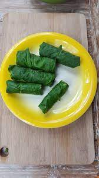

Simboro Manioc Recipe

This special dish is one of the commons in the Pacific especially in Vanuatu.
The name came from a local dialect that was commonly used by our ancestors long ago.
Not all traditional friendly to people especially kids because of their taste however,
with this special dish, it is always served with Tin fish which makes the taste delicious.
Ingredients
- Manioc (Cassava)
- Bundle Island Cabbage
- Coconut cream
- Garlic
- Onion
Instructions/h2>
- Wash all the ingredients
- Grade the Manioc
- Grade the Coconut if you do not have the cream available in Can
- Prepare the island cabbage leaves by flattening them to soften
- Put small portions of the manioc inside the leaves and wrap them up
- Once all that is ready, you can put them all in the ban
- Pour the coconut cream on top of the simboro's
- Wait for it to cook